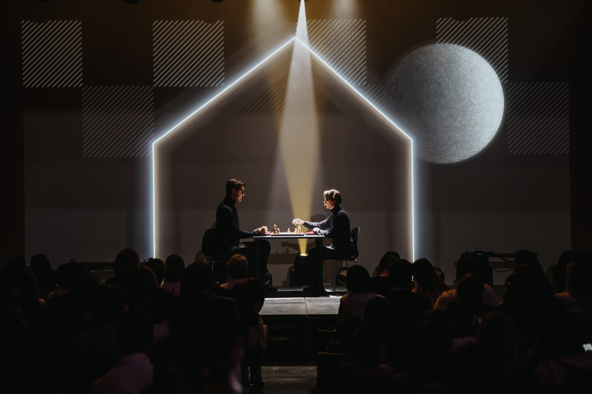
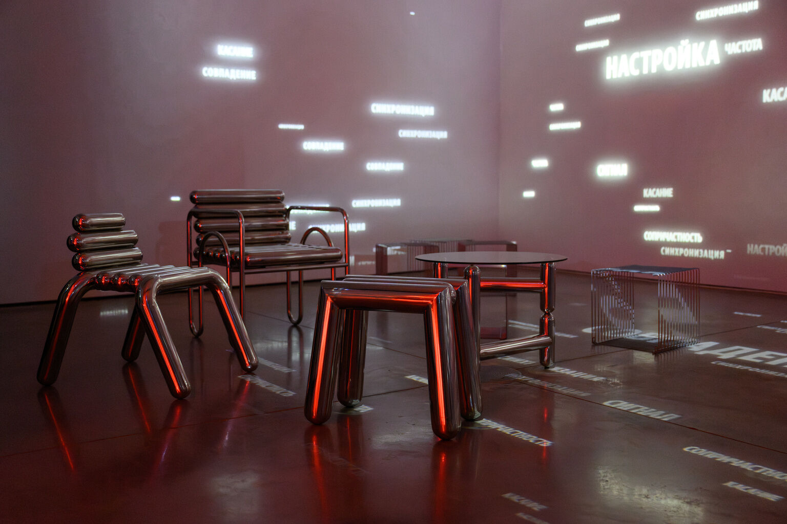
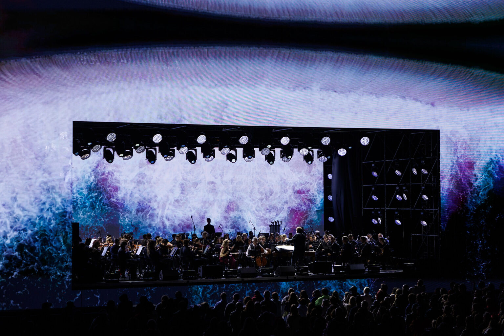
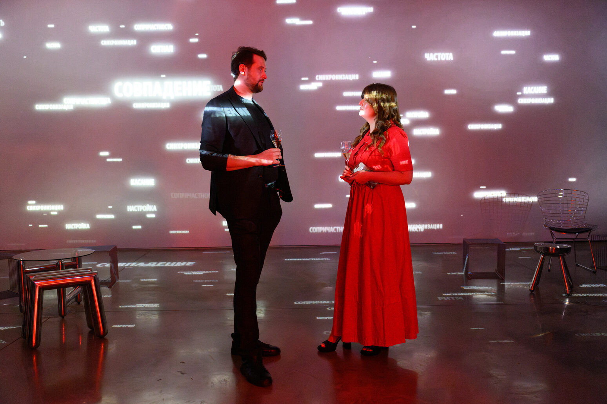
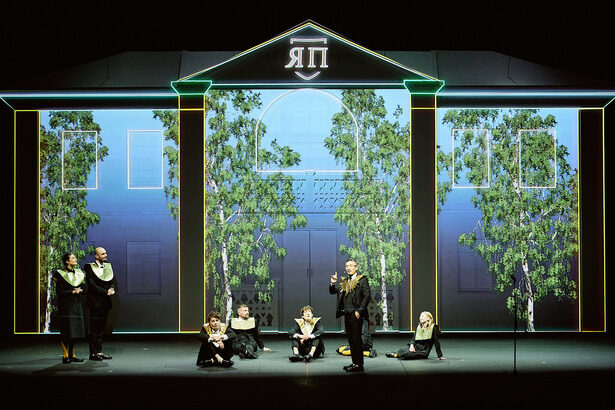
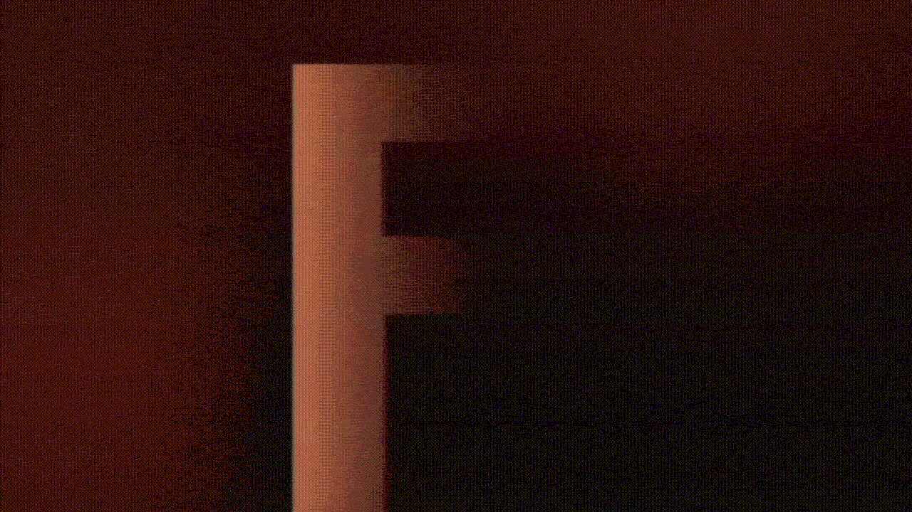
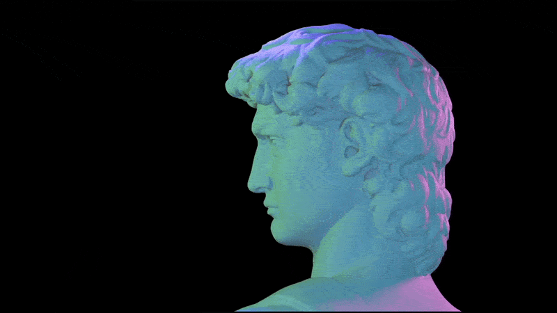
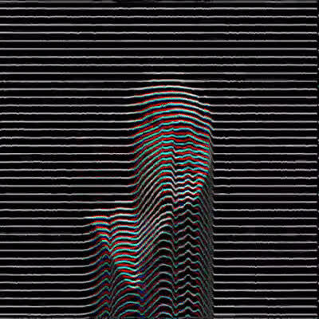
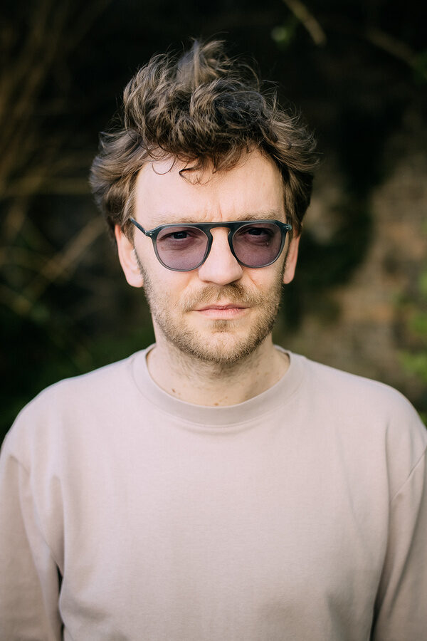

01
ProCharity Awards
Awards / Branding / Stage videoEvent branding and video design for an awards ceremony. The concept grew from Nabokov's novel The Luzhin Defense, with chess as the main visual reference.
I design video for live events ceremonies, concerts and launches, where the image has to belong to the room,

the architecture and the people inside it.
inside it.

Event branding and video design for an awards ceremony. The concept grew from Nabokov's novel The Luzhin Defense, with chess as the main visual reference.

Video design for a classical music concert that looks at water from an unusual angle and reveals its mesmerising power.

A video installation in a dedicated room, showing how meaning emerges from a chaos of scattered concepts.

A house facade became the central stage element and a canvas for 3D video mapping that told the changing seasons.

Video art for a presentation, in dialogue with the building's architecture, its window pattern and the branding of the workspace inside.
[Two lines: the space, the idea, your role.]

[Two lines: the space, the idea, your role.]

[Two lines: the space, the idea, your role.]
[Two lines: the space, the idea, your role.]
Video is part of the space. The architecture, the audience and the story of the event decide what the image should be and how it moves.
Venue, architecture, audience, brand and the story behind the event come first.
A visual idea that fits the place and holds the whole evening together.
Content made to work with your production, lighting and technical teams.

Mikhail Zaikanov studied at the Rodchenko Art School in Moscow. Since 2010 he has worked as a video artist and stage designer with leading theatres, creating video content for award ceremonies, live events and concerts. He combines a stage designer's perspective with a deep understanding of time-based media.